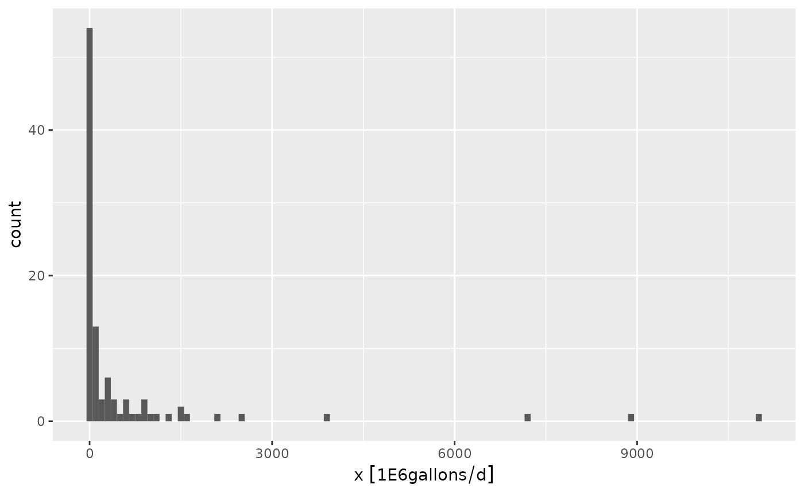

Introduction to Units
ldc relies on the units package to facilitate unit conversions and tracking of units across variables. This is handy if we want to transform units on the fly. I suggest briefly reviewing the units package documentation to become familiar with how units objects are handled. A brief example is shown below:
library(units)
#> udunits database from /usr/share/xml/udunits/udunits2.xml
## generate random data
x <- rlnorm(n = 100, meanlog = log(100), sdlog = log(10))
## attach units, cubic feet per second
x <- set_units(x, "ft^3/s")
x
#> Units: [ft^3/s]
#> [1] 19.9101262 85.3201035 4.6322935 57.5754908 1882.6949699
#> [6] 299.6057510 4.7218880 444.6182161 4.3605167 296.7863618
#> [11] 3452.4705500 24.6807607 111.5494519 120.8911970 53.3408842
#> [16] 4381.2494822 93.2068149 1.4081166 0.7166182 9.2366291
#> [21] 2820.8319518 487.6546226 3405.6609165 202.5687541 128.5898372
#> [26] 698.1518746 3.8207011 204.4990954 2327.7589887 2308.9841968
#> [31] 875.5957060 54.5485540 1477.9212049 6.1653877 127.4194866
#> [36] 219.7361209 2.3708132 56.3001511 29.8764930 1.2420633
#> [41] 158.4977862 42.8425227 21.9556797 122.4595398 1681.5536891
#> [46] 271.1072598 647.4798378 356.1408216 93.7624745 1714.2261222
#> [51] 12.1269639 651.1800815 2398.2598904 4.0805299 72.3288915
#> [56] 0.4068227 51.9773611 57.3494916 13.9539869 331.4525510
#> [61] 42.0752217 37.0917901 112.4604581 17.8290961 91.3535180
#> [66] 3089.9904287 628.1115498 77.8363146 1228.1766412 64.6209464
#> [71] 68.8879541 405.7639302 1762.9131012 0.1488861 1176.9827200
#> [76] 1.2459762 118.2232335 3062.0383455 416.2057011 5.5853330
#> [81] 90.6454080 2.1725603 175.3547413 189.5831028 58.3820797
#> [86] 15.9217423 14.0204886 33.5836504 527.1010733 2620.0361791
#> [91] 148.4187011 15.5522542 67.3575265 17.6289640 8.1189989
#> [96] 25.3786225 5.3761203 313.3404179 360.9288547 52.9708575x is a object of type units which can be used with most R expressions:
x * 86400
#> Units: [ft^3/s]
#> [1] 1720234.90 7371656.94 400230.15 4974522.40 162664845.40
#> [6] 25885936.89 407971.12 38415013.87 376748.64 25642341.66
#> [11] 298293455.52 2132417.73 9637872.64 10444999.42 4608652.39
#> [16] 378539955.26 8053068.81 121661.27 61915.81 798044.76
#> [21] 243719880.64 42133359.39 294249103.19 17501940.36 11110161.93
#> [26] 60320321.97 330108.58 17668721.84 201118376.62 199496234.61
#> [31] 75651469.00 4712995.07 127692392.10 532689.50 11009043.64
#> [36] 18985200.84 204838.26 4864333.06 2581329.00 107314.27
#> [41] 13694208.72 3701593.96 1896970.72 10580504.24 145286238.74
#> [46] 23423667.25 55942257.99 30770566.99 8101077.80 148109136.96
#> [51] 1047769.68 56261959.04 207209654.53 352557.78 6249216.23
#> [56] 35149.49 4490844.00 4954996.07 1205624.46 28637500.40
#> [61] 3635299.16 3204730.66 9716583.58 1540433.91 7892943.96
#> [66] 266975173.04 54268837.90 6725057.58 106114461.80 5583249.77
#> [71] 5951919.24 35058003.57 152315691.94 12863.76 101691307.01
#> [76] 107652.34 10214487.38 264560113.05 35960172.58 482572.77
#> [81] 7831763.25 187709.21 15150649.65 16379980.08 5044211.68
#> [86] 1375638.53 1211370.21 2901627.40 45541532.74 226371125.87
#> [91] 12823375.77 1343714.76 5819690.29 1523142.49 701481.50
#> [96] 2192712.98 464496.80 27072612.10 31184253.04 4576682.08The units can be converted:
## convert to cubic feet per day
x <- set_units(x, "ft^3/d")
x
#> Units: [ft^3/d]
#> [1] 1720234.90 7371656.94 400230.15 4974522.40 162664845.40
#> [6] 25885936.89 407971.12 38415013.87 376748.64 25642341.66
#> [11] 298293455.52 2132417.73 9637872.64 10444999.42 4608652.39
#> [16] 378539955.26 8053068.81 121661.27 61915.81 798044.76
#> [21] 243719880.64 42133359.39 294249103.19 17501940.36 11110161.93
#> [26] 60320321.97 330108.58 17668721.84 201118376.62 199496234.61
#> [31] 75651469.00 4712995.07 127692392.10 532689.50 11009043.64
#> [36] 18985200.84 204838.26 4864333.06 2581329.00 107314.27
#> [41] 13694208.72 3701593.96 1896970.72 10580504.24 145286238.74
#> [46] 23423667.25 55942257.99 30770566.99 8101077.80 148109136.96
#> [51] 1047769.68 56261959.04 207209654.53 352557.78 6249216.23
#> [56] 35149.49 4490844.00 4954996.07 1205624.46 28637500.40
#> [61] 3635299.16 3204730.66 9716583.58 1540433.91 7892943.96
#> [66] 266975173.04 54268837.90 6725057.58 106114461.80 5583249.77
#> [71] 5951919.24 35058003.57 152315691.94 12863.76 101691307.01
#> [76] 107652.34 10214487.38 264560113.05 35960172.58 482572.77
#> [81] 7831763.25 187709.21 15150649.65 16379980.08 5044211.68
#> [86] 1375638.53 1211370.21 2901627.40 45541532.74 226371125.87
#> [91] 12823375.77 1343714.76 5819690.29 1523142.49 701481.50
#> [96] 2192712.98 464496.80 27072612.10 31184253.04 4576682.08Units can be plotted:

The ggforce package is required to handle plotting units in ggplot2:
library(ggplot2)
library(ggforce)
ggplot(data.frame(x)) +
geom_histogram(aes(x), binwidth = 100) 
Units with ldc
Stream loads are measured in pounds or kilograms per day for pollutants such as nutrients and sediment. Fecal bacteria loads are typically in colony forming units (cfu) or most probable number (MPN) per day. The included tres_palacios dataset includes bacteria and flow measurements from the Tres Palacios river. Bacteria measurements will need to units in “cfu/100mL” and flow should be in “cubic feet per second.”
library(dplyr)
#>
#> Attaching package: 'dplyr'
#> The following objects are masked from 'package:stats':
#>
#> filter, lag
#> The following objects are masked from 'package:base':
#>
#> intersect, setdiff, setequal, union
## create a cfu unit. it is a simple count, so we just add it as an arbitrary unit.
install_unit("cfu")
## format the data for use in ldc
tres_palacios <- as_tibble(tres_palacios) |>
## flow must have units, here is is in cfs
mutate(Flow = set_units(Flow, "ft^3/s"))|>
## pollutant concentration must have units
mutate(Indicator_Bacteria = set_units(Indicator_Bacteria, "cfu/100mL"))
tres_palacios
#> # A tibble: 7,671 × 4
#> site_no Date Flow Indicator_Bacteria
#> <chr> <date> [ft^3/s] [cfu/100mL]
#> 1 08162600 2000-01-01 0.84 NA
#> 2 08162600 2000-01-02 3 NA
#> 3 08162600 2000-01-03 3.4 NA
#> 4 08162600 2000-01-04 2.6 NA
#> 5 08162600 2000-01-05 1.6 NA
#> 6 08162600 2000-01-06 3.2 NA
#> 7 08162600 2000-01-07 11 NA
#> 8 08162600 2000-01-08 17 NA
#> 9 08162600 2000-01-09 22 NA
#> 10 08162600 2000-01-10 18 NA
#> # … with 7,661 more rowsThe tibble above shows the correct units in each column. What if we want to use metric units for flow?
tres_palacios <- tres_palacios |>
mutate(Flow = set_units(Flow, "m^3/s"))
tres_palacios
#> # A tibble: 7,671 × 4
#> site_no Date Flow Indicator_Bacteria
#> <chr> <date> [m^3/s] [cfu/100mL]
#> 1 08162600 2000-01-01 0.0238 NA
#> 2 08162600 2000-01-02 0.0850 NA
#> 3 08162600 2000-01-03 0.0963 NA
#> 4 08162600 2000-01-04 0.0736 NA
#> 5 08162600 2000-01-05 0.0453 NA
#> 6 08162600 2000-01-06 0.0906 NA
#> 7 08162600 2000-01-07 0.311 NA
#> 8 08162600 2000-01-08 0.481 NA
#> 9 08162600 2000-01-09 0.623 NA
#> 10 08162600 2000-01-10 0.510 NA
#> # … with 7,661 more rowsNow we can calculate the flow and load exceedance probabilities using calc_ldc(). Q and C arguments must have units attached and C must be a concentration unit (mass or counts divided by volume).
## specify the allowable concentration
allowable_concentration <- 126
## set the units
units(allowable_concentration) <- "cfu/100mL"
## calculate the exceedance probabilities along with
## allowable pollutant loads and measured pollutant loads
## at given probabilities
df_ldc <- calc_ldc(tres_palacios,
Q = Flow,
C = Indicator_Bacteria,
allowable_concentration = allowable_concentration)
df_ldc
#> # A tibble: 7,671 × 9
#> site_no Date Flow Indicator_Bacteria Daily_Flow_Volume Daily_Load
#> <chr> <date> [m^3/s] [cfu/100mL] [100mL/d] [cfu/d]
#> 1 08162600 2000-08-18 0.00623 NA 5382466. NA
#> 2 08162600 2000-03-07 0.0119 NA 10275617. NA
#> 3 08162600 2000-03-06 0.0170 NA 14679453. NA
#> 4 08162600 2000-08-22 0.0212 NA 18349317. NA
#> 5 08162600 2000-03-08 0.0221 NA 19083289. NA
#> 6 08162600 2000-08-17 0.0221 NA 19083289. NA
#> 7 08162600 2000-09-11 0.0227 NA 19572604. NA
#> 8 08162600 2000-01-01 0.0238 NA 20551235. NA
#> 9 08162600 2000-08-21 0.0263 NA 22753153. NA
#> 10 08162600 2000-03-05 0.0283 NA 24465755. NA
#> # … with 7,661 more rows, and 3 more variables: Allowable_Daily_Load [cfu/d],
#> # P_Exceedance <dbl>, Flow_Category <fct>Now we have the percent exceedance for daily flow, flow volume, and allowable daily loads. The daily flow volume and daily load volume are huge numbers, so it might make sense to convert those units.
df_ldc |>
mutate(Daily_Flow_Volume = set_units(Daily_Flow_Volume, "m^3/day"),
Allowable_Daily_Load = set_units(Allowable_Daily_Load, "1E9cfu/day"))
#> # A tibble: 7,671 × 9
#> site_no Date Flow Indicator_Bacteria Daily_Flow_Volume Daily_Load
#> <chr> <date> [m^3/s] [cfu/100mL] [m^3/d] [cfu/d]
#> 1 08162600 2000-08-18 0.00623 NA 538. NA
#> 2 08162600 2000-03-07 0.0119 NA 1028. NA
#> 3 08162600 2000-03-06 0.0170 NA 1468. NA
#> 4 08162600 2000-08-22 0.0212 NA 1835. NA
#> 5 08162600 2000-03-08 0.0221 NA 1908. NA
#> 6 08162600 2000-08-17 0.0221 NA 1908. NA
#> 7 08162600 2000-09-11 0.0227 NA 1957. NA
#> 8 08162600 2000-01-01 0.0238 NA 2055. NA
#> 9 08162600 2000-08-21 0.0263 NA 2275. NA
#> 10 08162600 2000-03-05 0.0283 NA 2447. NA
#> # … with 7,661 more rows, and 3 more variables:
#> # Allowable_Daily_Load [1E9cfu/d], P_Exceedance <dbl>, Flow_Category <fct>